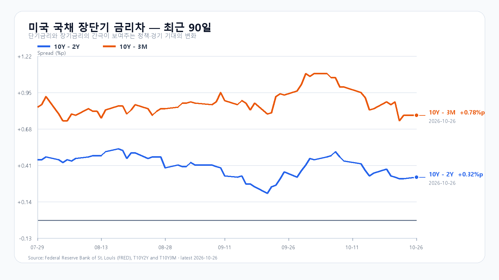
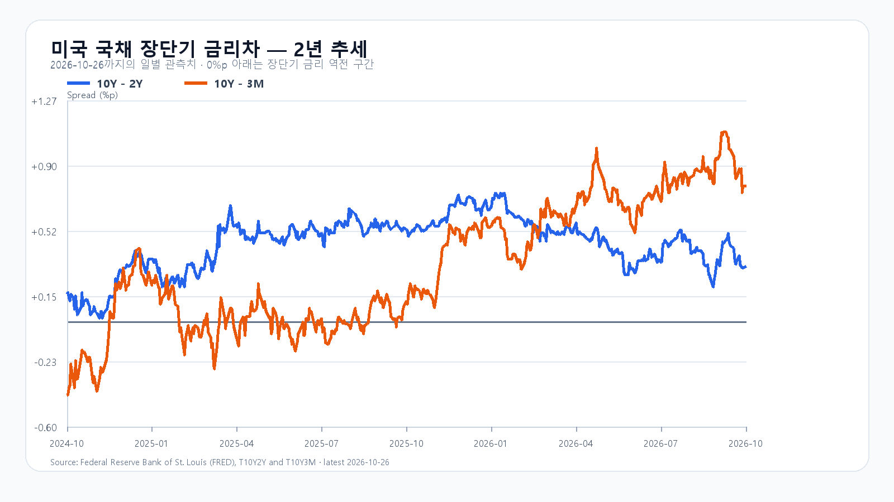

AI 기업들이 투자금을 마련할 새 통로를 열자 미국 반도체주가 함께 올랐습니다. Meta는 대규모 공모를 시작했고 SpaceX는 GPU 금융 약정을 발표했습니다. 월요일 하락한 한국장에는 반등을 시도할 재료가 생겼지만, KOSPI가 5,500선을 되찾은 뒤 매수를 이어갈 수 있는지가 관건입니다.
Meta의 공모와 SpaceX의 GPU 금융이 바꾼 기대
Meta는 26일 약 350억달러 규모의 공모를 시작했습니다. 보통주 225억달러와 전환우선주 관련 증권 125억달러로 구성됩니다. 향후 약 600억달러의 시장가 매각 프로그램도 계획하고 있습니다. 보통주 선도매매분의 자금은 향후 정산 때 들어오며 추가 매각의 시기와 조건도 정해지지 않았습니다. Meta 회사 발표
Nvidia·AMD·Broadcom이 합계 최대 50억달러의 보통주 매입에 관심을 보였다는 점도 눈에 띕니다. 구매 의향은 구속력 있는 약정이 아닙니다. 칩 공급업체가 고객의 자금 조달에 참여할 수 있다는 기대가 생겼지만 실제 주문과 투자금 회수는 앞으로의 실적에 달려 있습니다.
SpaceX는 Apollo가 관리하는 법인과 약 400억달러의 GPU 금융리스에 들어가기 위한 구속력 있는 약정을 발표했습니다. 종결 조건을 충족하면 연말 이전 거래를 마치고 2027년 상반기 장비 인도에 따라 리스가 시작될 예정입니다. Nvidia의 차세대 Vera Rubin 칩을 사용할 계획입니다. 금융 약정은 투자 지속에 도움이 되지만 장비 인도와 매출 발생까지는 시간이 남아 있습니다. SpaceX 발표
Anthropic도 IPO 등록 서류를 공개했습니다. 공모가격과 주식 수는 아직 정해지지 않았습니다. AI 기업의 자본시장 접근이 넓어지면 설비 투자를 이어갈 여지가 커집니다. 반대로 대형 조달이 잇따르면 투자자의 자금과 관심을 나눠 가져야 합니다. Anthropic S-1
반도체주는 함께 올랐고 메모리 현물은 갈렸다
미국 26일 정규장에서 SOXX는 2.85%, SMH는 2.74% 올랐습니다. Nvidia 2.39%, AMD 2.80%, Micron 2.98%, Broadcom 2.33%로 주요 종목이 동반 상승했습니다. QQQ는 1.11%, TQQQ는 3.23% 올랐습니다. 자금 조달 소식이 투자 지속 기대를 높인 가운데 반도체 매수가 업종 전반으로 퍼졌습니다. 미국 시세
26일 대만시간 오후 6시 10분 기준 DDR5 16Gb 현물 평균은 61.333달러로 0.11% 올랐고 DDR4 16Gb는 82.623달러로 0.30% 내렸습니다. 제품별 가격 차이가 이어지고 있습니다. 이 현물 가격만으로 HBM과 서버 메모리 장기 계약의 수익성을 판단할 수는 없습니다. TrendForce
KOSPI 5,500선 회복에 매수가 붙는가
월요일 KOSPI는 5,565.67까지 올랐다가 5,469.47로 마쳐 1.46% 하락했습니다. KODEX 레버리지도 67,985원에서 밀려 65,475원으로 끝났습니다. 장중 반등 뒤 매도가 다시 우세해진 만큼 오늘은 개장 상승 폭보다 오전 10시 이후 삼성전자·SK하이닉스 가격과 외국인·프로그램 매수의 동행을 봐야 합니다.
오늘 기본 종가 범위는 5,400~5,600(50%)으로 봅니다. 5,600선을 넘고 외국인·프로그램 매수가 동행하는 강세 범위는 5,600 초과~5,750(30%), 5,400선 아래에서 매도가 이어지는 약세 범위는 5,200~5,400 미만(20%)입니다. 5,600선 재이탈은 강세 판단을, 5,400선 회복은 약세 판단을 무효로 만듭니다. 예상 범위를 벗어나는 변동도 가능합니다.
KODEX 레버리지는 전일 저점 65,115원을 첫 지지, 시가 66,075원을 반등 기준, 고점 67,985원을 저항으로 봅니다. 65,115원 아래에서 회복하지 못하면 반등 지속 판단을 접습니다. 지난주 솔리다임 소식과 기존 AI 투자비 부담에 더해 오늘 새로 발표된 금융 약정이 국내 주가에 얼마나 힘을 보태는지 확인할 차례입니다.
FOMC 앞에서 5%인 미국 장기금리
미 재무부의 26일 금리는 3개월물 4.22%, 2년물 4.68%, 10년물 5.00%입니다. 2년물은 전 거래일보다 1bp 낮아졌지만 장기금리는 높은 수준에 머물렀습니다. 자금 조달 규모가 커져도 투자비 회수 부담은 남습니다. 미 재무부
FOMC는 미국시간 27~28일 열리며 결정은 한국시간 29일 오전 3시에 나옵니다. Microsoft는 미국시간 28일, Amazon은 29일 실적을 발표할 예정입니다. 한국시간 29일 오후 9시 30분에는 GDP 속보치와 PCE 물가를 포함한 개인소득·소비가 함께 발표됩니다. 금리 경로와 AI 투자 수익성이 짧은 기간에 다시 평가받을 일정입니다. 연준 · BEA
장전 시세
| 항목 | 최근값 | 원천 시각 |
| 삼성전자 NXT (OPEN) | 219,000원 · 2.82% | 2026-10-27T08:03:45.459855+09:00 |
| SK하이닉스 NXT (OPEN) | 1,320,000원 · 3.53% | 2026-10-27T08:03:45.459864+09:00 |
| 하나은행 USD/KRW 고시 | 1,327.00원 | 2026-10-27T07:51:22+09:00 |
| NQF 최근 거래 | 29,473.50 | 2026-10-27T07:53:43+09:00 |
| ESF 최근 거래 | 7,717.00 | 2026-10-27T07:53:35+09:00 |
| CLF 최근 거래 | 101.32 | 2026-10-27T07:53:33+09:00 |
| BZF 최근 거래 | 110.24 | 2026-10-27T07:26:51+09:00 |
미국 시간외 최근 거래
| 종목 | USD | 종가 대비 | 원천 시각 |
| NVDA | 216.36 | +0.17% | 2026-10-27T07:58:36+09:00 |
| AMD | 532.50 | +0.23% | 2026-10-27T07:58:21+09:00 |
| MU | 906.92 | +0.36% | 2026-10-27T07:58:36+09:00 |
| AVGO | 332.93 | +1.14% | 2026-10-27T07:58:12+09:00 |
미국 정규장
| 종목 | 종가 USD | 등락 |
| QQQ | 712.20 | +1.11% |
| TQQQ | 68.43 | +3.23% |
| SOXX | 491.83 | +2.85% |
| SMH | 541.62 | +2.74% |
| NVDA | 216.00 | +2.39% |
| AMD | 531.28 | +2.80% |
| MU | 903.70 | +2.98% |
| AVGO | 329.17 | +2.33% |


Meta 회사 발표 · SpaceX 금융 약정 · Anthropic S-1 · DRAM 현물 · 미 재무부 · 미국 시세 · 국내 일봉 · FOMC · BEA 일정 · Microsoft IR · Amazon 실적 일정